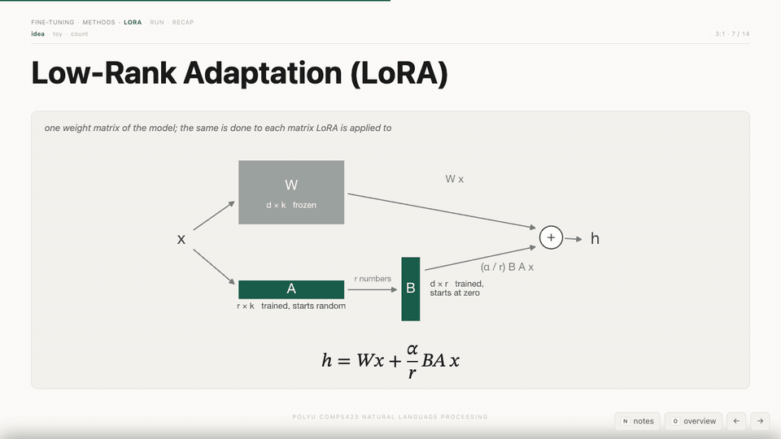
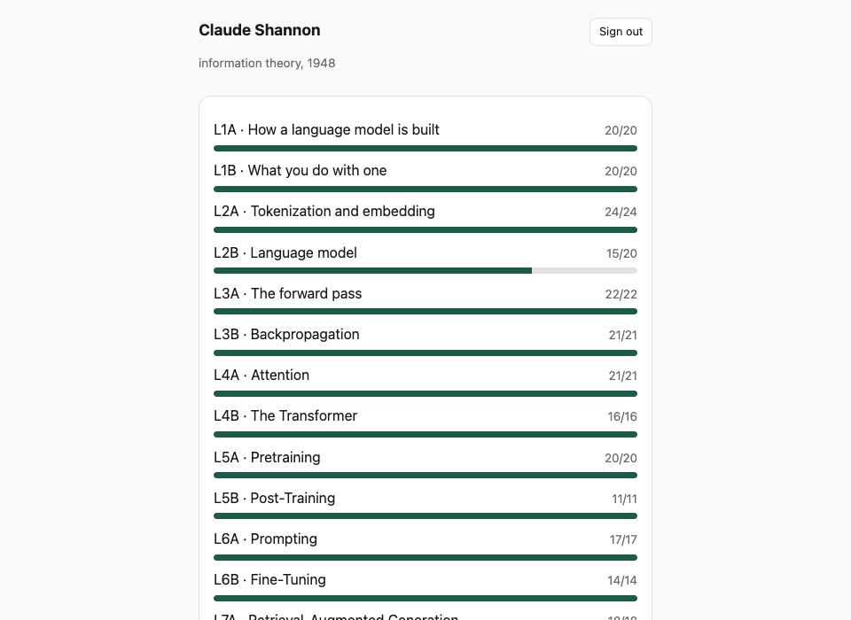
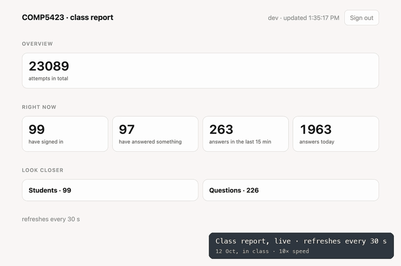
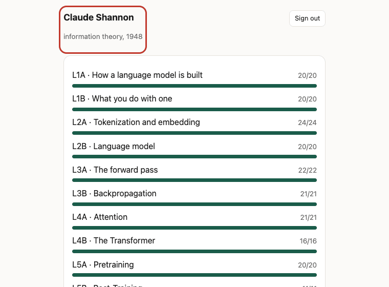
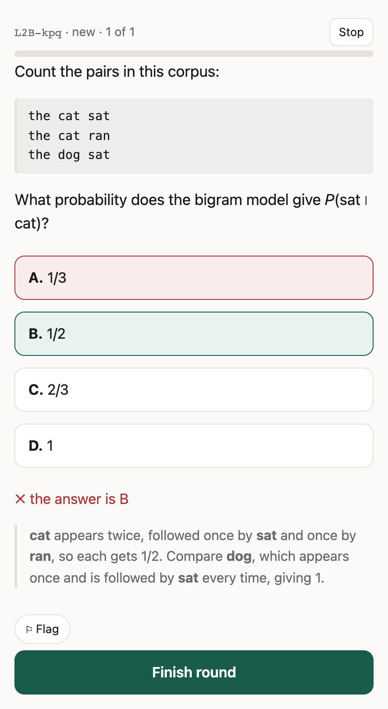
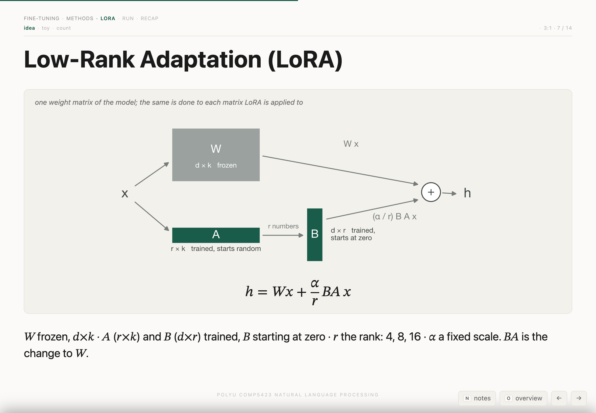

COMP5423 Natural Language Processing · PolyU · Fall 2026 · an Education 4.0 experiment
COMP5423 teaches 97 students in one three-hour class. This term an AI agent helped rebuild the whole course for what PolyU's Education 4.0 asks: interactive, flexible, and personalised learning. An experiment, still rough.
Interactive
Interactive
A web page does what a PowerPoint file cannot. N opens the speaker notes, O shows every slide, a click fills the screen with a figure, and the code downloads from the slide itself.

Personalised
The teacher asks, the student answers, the teacher explains. The workbook does this for every student at once.
Personalised
Every answer is marked at once, with the reason. Missed questions come back until they are right.

Interactive
About 50 per student on a class day, each one explained. The lecturer's review of what the room missed is one more round.
Data-driven
The class report refreshes every 30 seconds and ranks questions by how often they were missed. When practice ends, the review is already planned. And it pays off: on three of four quizzes, students who finished the workbook scored higher.

Personalised
Privacy first: no real name appears anywhere, not even in the lecturer's class report. Each student is a researcher who shaped the field, with a line on what they did. Finding a fitting name for every student is slow work by hand; the AI agent found them all.

Flexible
Flexible
Nothing to install. Practice on the bus; reread a lecture on a tablet.


AI to learn AI
Students build with AI, and the projects themselves were made by an AI agent, from the lecturer's prompts and under the lecturer's review.
Hands-on
A small GPT, trained on 24,000 Tang poems, writes poems of its own.
春風吹雨不勝愁，
深院無人更上樓。
若道此時相憶處，
夜來還夢到揚州。
by James Flanagan's model · rated 5.00 out of 5
一別巫山後，
相思三五秋。
空悲昨夜夢，
已盡不勝愁。
by Danny Cohen's model · rated 5.00 out of 5
Real world
Banking is a Hong Kong strength. For a mock Hong Kong bank, students build a system that reads a customer's few lines, in English, Chinese or both, and decides: approve or reject, at what monthly payment. Every step is a topic of the course.
"Ms Kwan, 36, social worker, same NGO for 12 yrs 3 mths. 56k a month, no bonus. Debts: personal loan $8,800/mth, plus a credit card balance of about $29,000… Looking at a 5.2M flat in Sheung Shui, 2.56M down (incl. 1M gift from her aunt), 30 years."
Approve · HK$11,855 a month
AI-empowered
Quick, personal feedback has always worked. In a big class, the work behind it was the barrier. Now the lecturer decides what to teach and writes the prompts, the AI agent builds the questions, pages and systems, and the lecturer and TAs check everything before students see it. The agent costs about HK$160 (US$20) a month. Teaching becomes the creative part.